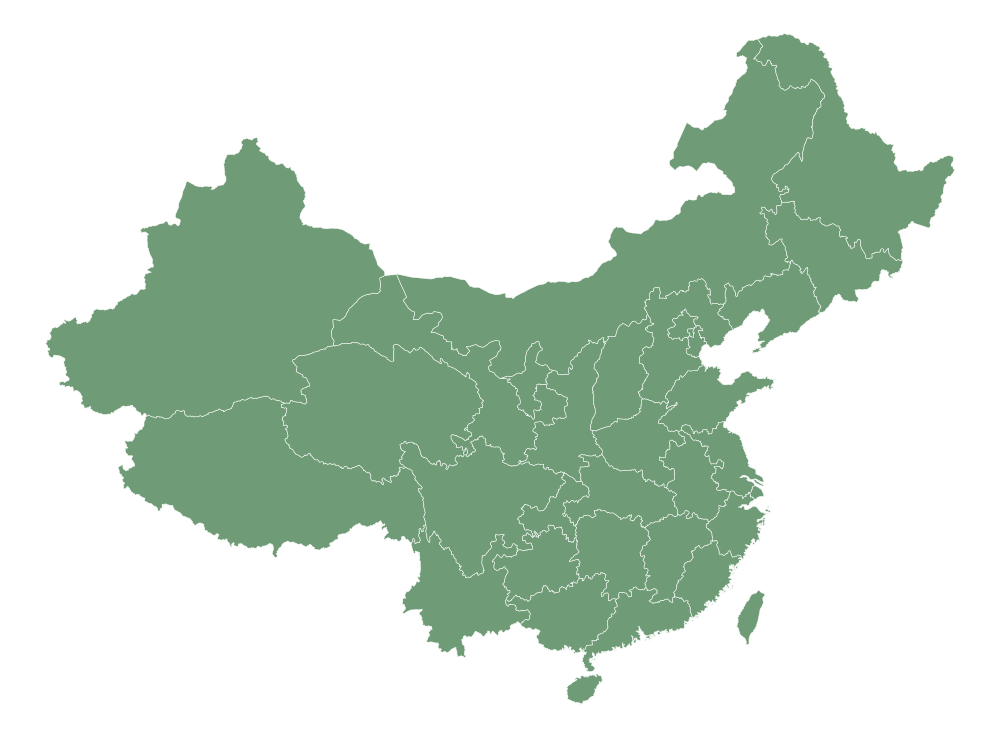

China Network
全国合作医院网络版图
以中国地图呈现合作城市与协作链路，便于快速查看区域覆盖和重点机构。

合作城市点位
平台协作链路
Clinical-grade, locally audited
页面围绕胃肠癌、听神经瘤、脊索瘤、眼科多模态和 MRI 多场强方向展开， 统一展示数据结构、影像预览、研究价值与合作网络，适合直接用于项目介绍与对外沟通。
Datasets
每个详情页都围绕该数据方向的图像、统计摘要、研究价值与合作潜力展开。
Decoded Samples
包含 CRC 统计图、听神经瘤三维影像关键切片，以及眼科 CT/MRI 等多模态图像预览。
Hospital Network
基于中国地图展示合作城市分布与协作链路，点击任一城市即可查看对应医院或科研机构。
以中国地图呈现合作城市与协作链路，便于快速查看区域覆盖和重点机构。

Clinical Collaboration
我们可以联动科室主任推进定制化采集、数据勾画和问题定义，把模型研究和临床需求真正接起来。
根据病种、模态和终点变量，反向定位合作医院和科室，规划采集范围。
支持与医院联合完成结构化整理、病灶勾画和临床标签定义。
让研究问题直接对齐科室主任和临床医生的真实痛点，提升项目转化意义。